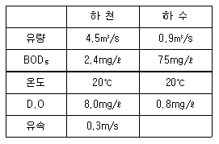
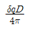
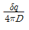
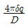
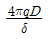
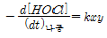
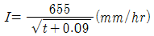
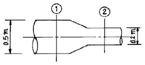
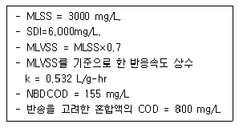
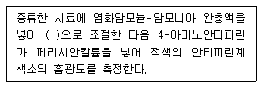

수질환경기사 (2005-05-29 기출문제)
1과목: 수질오염개론
1. 이상적 plug flow에 관한 내용으로 알맞지 않은 것은 ?
- tank가 옆으로 길고 상하는 혼합하나 좌우혼합은 없다.
- Morrill 지수는 값은 1 이다.
- 분산(variance)는 0 이다.
- 분산수(dispersion NO)는 1 이다.
(정답률: 59%)

2. 일차 가역 반응에서 반응물질 A의 반감기가 11일 이라고 한다면 A 물질의 95% 가 소모되는데 소요되는 시간은?
- 약 48일
- 약 59일
- 약 62일
- 약 75일
(정답률: 77%)
3. Vollenweider가 제안한 영양물질 수지모델(호소의 부영화 예측모델)에서 제시한 물질수지식과 관계 없는 항목은?
- 방류유량
- 자정반응율
- 침전율 계수
- 호수의 체적
(정답률: 50%)
4. 수질오염물질별 인체영향(질환)을 틀리게 짝지어진 것은?
- 불소: 법랑 반점
- 망간: 파킨슨씨 증후군과 유사증상
- 납: 카네미유증
- 비소: 피부염
(정답률: 75%)
5. 10℃에서 DO 8㎎/L인 물의 DO 포화도는 몇 % 인가? (단, 대기의 화학적 조성중 O2 는 21%(V/V), 10℃에서 순수한 물의 공기에 대한 용해도는 38.46㎖/L이라 가정하시오.)
- 약 65
- 약 70
- 약 80
- 약 85
(정답률: 46%)
6. Glucose(C6H12O6) 500mg/L인 용액이 있다. 혐기성 분해시 생산되는 이론적 메탄량(mg/L)은?
- 133
- 267
- 533
- 934
(정답률: 46%)
7. 어느 하천에 다음과 같은 하수가 유입될 때 혼합지점으로 부터 5km 하류 지점에서의 용존산소 부족량은? (단, 혼합수의 K1과 K2(밑이 e)는 0.2/일과 0.3/일이며 20℃에서의 포화산소 농도는 9.2mg/ℓ이다.)

- 3.1mg/ℓ
- 3.7mg/ℓ
- 4.1mg/ℓ
- 4.8mg/ℓ
(정답률: 28%)
8. 자당(sucrose, C12H22O11)이 완전히 산화될 때 이론적인 ThOD/ThOC 비는?
- 12.24
- 8.67
- 4.48
- 2.67
(정답률: 67%)
9. 공장폐수에 무기응집제를 넣어 반응시킬때 콜로이드의 안정도는 Zeta전위에 따라 결정되는데 그 식은? (단, δ= 전하가 영향을 미치는 전단표면 주위의 층의 두께, q= 단위면적당 전하, D= 매개체의 도전상수 )




(정답률: 알수없음)
10. PbSO4가 25℃ 수용액내에서 용해도가 0.075g/L 이라면 용해도적은? (단, Pb 원자량은 207)
- 3.4×10-9
- 4.7×10-9
- 5.8×10-8
- 6.1×10-8
(정답률: 70%)
11. 유출,유입량이 5,000m3/d, 저수량이 500,000m3인 호수에 A공장의 폐수가 일시적으로 방류되어 호수의 BOD 농도가 100mg/L로 되었다. 이 호수의 BOD농도가 1.0mg/L로 저하되려면 얼마의 기간이 필요한가? (단, 일시적으로 유입된 공장폐수외의 BOD유입은 없으며 호수는 완전 혼합 반응조,1차반응으로 가정한다.)
- 230일
- 330일
- 460일
- 560일
(정답률: 알수없음)
12. 다음 중 적조 현상에 직접적으로 영향을 주는 요인과 가장 거리가 먼 것은?
- 수온의 상승
- 플랑크톤 농도의 증가
- 정체수역의 염분 농도 상승
- 하천유입수의 오염도 증가
(정답률: 58%)
13. 암모니아를 처리하기 위해 살균제로 차아염소산을 반응시켜 mono-chloramine 으로 형성되었다. 이때 각 반응 물질이 50 % 줄었다면 반응속도는 몇 % 감소했는가? (단,반응속도식:

)- 75 %
- 60 %
- 50 %
- 25 %
(정답률: 알수없음)
14. 다음 중 광합성의 영향인자와 가장 거리가 먼 것은?
- 빛의 강도
- 빛의 파장
- 온도
- O2농도
(정답률: 60%)
15. 해수의 특성에 관한 설명으로 가장 알맞는 것은?
- 염분은 적도해역이나 극해역에서 차이 없이 일정하다.
- 해수의 주요성분 농도비는 수온, 염분의 함수로 수심이 깊어수록 증가한다.
- 해수의 Mg/Ca비는 3 - 4 정도로 담수보다 매우 높다.
- 80% 이상의 질소는 유기질소형태를 갖는다.
(정답률: 알수없음)
16. 소수성콜로이드의 특성으로 틀린 것은?
- 표면장력은 용매보다 약함
- 염에 아주 민감함
- 틴들효과가 현저함
- pH가 낮으면 양전하콜로이드가 많아짐
(정답률: 알수없음)
17. 분뇨의 특성에 관한 설명과 가장 거리가 먼 것은?
- 분뇨는 다량의 유기물이 함유되어 있으며 BOD, SS는 COD의 1/3 ∼ 1/2 정도이다.
- 분과 뇨의 구성비는 약 1:8∼10 정도이며 고액 분리가 어렵다.
- 뇨의 경우 질소화합물는 전체 VS의 75∼80% 정도 함유하고 있다.
- 분뇨내 염소이온의 농도는 약 4000mg/L 정도이다.
(정답률: 알수없음)
18. 산소주입량을 구하기 위하여 먼저 물 속의 용존산소를 0 으로 만들려고 한다. 이를 위하여 용존산소가 포화 (표준상태에서 포화농도를 11㎎/ℓ로 가정)된 물에 소요되는 Na2SO3의 첨가량은? (단, Na: 23, S: 32, 완전 반응하는 경우로 가정함 )
- 89.7㎎/ℓ
- 86.6㎎/ℓ
- 75.5㎎/ℓ
- 71.4㎎/ℓ
(정답률: 64%)
19. 지하수 수직 깊이에 따른 수질분포의 특성으로 틀린 것은?
- 산화-환원전위: 상층수는 높고 하층수는 낮다.
- 알칼리도:상층수는 작고 하층수는 크다.
- 염분:상층수는 작고 하층수는 크다.
- 질소:상층수는 크고 하층수는 작다.
(정답률: 알수없음)
20. 어떤 시료에 메탄올(CH3OH) 500 mg/L가 함유되어 있다. 이 시료의 ThOD 및 BOD5의 값을 바르게 나타낸 것은? (단, 메탄올의 BODU = ThOD 이며 탈산소계수는 0.1/day 이고 base는 10이다.)
- ThOD 850 mg/L, BOD5 643 mg/L
- ThOD 850 mg/L, BOD5 613 mg/L
- ThOD 750 mg/L, BOD5 543 mg/L
- ThOD 750 mg/L, BOD5 513 mg/L
(정답률: 알수없음)
2과목: 상하수도계획
21. 다음은 하수도용 펌프에 관한 설명이다. 옳지 않은 것은? (단, Ns : 비교회전도 )
- Ns가 크면 유량이 많은 저양정의 펌프로 된다.
- Ns의 값은 펌프형식 선정의 기준이 된다.
- 수량 및 전양정이 같다면 회전수가 많을수록 Ns의 값이 크게 된다.
- Ns가 작게 될수록 흡입성능이 나쁘고 공동현상이 발생하기 쉽다.
(정답률: 알수없음)
22. 하수도 설치계획시 목표년도는 원칙적으로 몇년 정도로 설정하는가 ?
- 10년
- 20년
- 30년
- 40년
(정답률: 58%)
23. 상수의 계획취수량을 확보하기 위하여 필요한 저수용량의 결정에 사용하는 계획기준년은 ?
- 원칙적으로 7개년에 제1위 정도의 갈수를 표준으로 한다.
- 원칙적으로 10개년에 제1위 정도의 갈수를 표준으로 한다.
- 원칙적으로 15개년에 제1위 정도의 갈수를 표준으로 한다.
- 원칙적으로 20개년에 제1위 정도의 갈수를 표준으로 한다.
(정답률: 50%)
24. 정수처리를 위한 막여과설비에서 적절한 막여과 유속 설정시 고려할 사항으로 틀린 것은?
- 막의 종류
- 막공급의 수질과 최고 온도
- 전처리설비의 유무와 방법
- 입지조건과 설치공간
(정답률: 40%)
25. 펌프의 회전수 N = 1600rpm, 최고 효율점의 양수량 Q = 162m3/hr, 전양정 H = 90m인 원심펌프의 비회전도는?
- 약 90
- 약 110
- 약 180
- 약 210
(정답률: 70%)
26. 응집지(정수시설)내 급속혼화시설의 급속혼화방식과 가장 거리가 먼 것은?
- 공기식
- 수류식
- 기계식
- 펌프확산에 의한 방법
(정답률: 알수없음)
27. 정수장에서 송수를 받아 해당 배수구역으로 배수하기 위한 배수지에 대한 설명(기준)으로 틀린 것은?
- 유효용량은 시간변동조정용량과 비상대처용량을 합한다.
- 유효용량은 급수구역의 계획1일최대급수량의 6시간분 이상을 표준으로 한다.
- 배수지의 유효수심은 3 - 6m 정도를 표준으로 한다.
- 고수위에서 배수지의 상부 슬래브까지는 30cm 이상의 여유고를 둔다.
(정답률: 알수없음)
28. 하수 2차 처리시설 계획하수량의 표준이 되는 것은? (단, 처리시설, 합류식하수도 기준)
- 우천시 계획오수량
- 계획 1일 최대오수량
- 계획 시간 최대 오수량
- 대상 오수량
(정답률: 30%)
29. 펌프의 토출유량은 900m3/hr, 흡입구의 유속은 1m/sec 일 때 펌프의 흡입구경(mm)은?
- 약 570
- 약 520
- 약 480
- 약 400
(정답률: 알수없음)
30. 유역면적이 100ha 이고 유입시간(time of inlet)이 8분, 유출계수(C)가 0.38 일 때 최대계획우수유출량은? (단, 하수관거의 길이(L)는 400m 이며 관유속(管流速)이 1.2m/sec로 되도록 설계하며

이다. 합리식 적용 )- 약 18 m3/sec
- 약 24 m3/sec
- 약 36 m3/sec
- 약 42 m3/sec
(정답률: 56%)
31. 다음 그림과 같은 상수관로에서 단면 ①에서의 지름이 0.5m, 유속이 2m/sec이고 단면 ②에서의 지름이 0.2m일때 단면 ②에서의 유속은? (단, 유량은 변화없음)

- 27.5m/sec
- 24.5m/sec
- 18.5m/sec
- 12.5m/sec
(정답률: 알수없음)
32. 호소의 중소량 취수시설로 많이 사용되고 구조가 간단하며 시공도 비교적 용이하나 수중에 설치되므로 호소의 표면수는 취수할 수 없는 것은?
- 취수틀
- 취수보
- 취수관거
- 취수문
(정답률: 알수없음)
33. 정수처리를 위한 급속여과지에 관한 설명으로 틀린 것은?
- 중력식을 표준으로 한다.
- 여과면적은 계획정수량을 여과속도로 나누어 구한다.
- 1지의 여과면적은 250m2 이하로 한다.
- 여과속도는 120 - 150m/day를 표준으로 한다.
(정답률: 알수없음)
34. 정수처리방법인 중간염소처리에서 염소의 주입 위치로 가장 적절한 것은?
- 취수시설과 도수관로 사이에서 주입
- 침전지와 여과지의 사이에서 주입
- 착수정과 혼화지의 사이에서 주입
- 착수정과 도수관로 사이에서 주입
(정답률: 알수없음)
35. 하수 고도처리를 위한 급속여과 장치에 관한 설명 중 알맞지 않는 것은 ?
- 여과압에 따라서 중력식과 압력식으로 나눌 수 있다.
- 여과속도는 유입수와 여과수의 수질, SS의 포획능력 및 여과지속시간을 고려하여 정한다.
- 모래여과기인 경우 여과속도는 일반적으로 300m/day 이하로 한다.
- 여재의 충전높이는 여재의 공극율, 비표면적, 균등계수 등을 고려하여 정한다.
(정답률: 알수없음)
36. 하수도 관거의 단면형상이 계란형일 때의 장·단점으로 틀린 것은?
- 유량이 큰 경우 원형거에 비해 수리학적으로 유리하다.
- 원형거에 비하여 관폭이 작아도 되므로 수직방향의 토압에 유리하다.
- 재질에 따라 제조비가 늘어나는 경우가 있다.
- 수직방향의 시공에 정확도가 요구되므로 면밀한 시공이 필요하다.
(정답률: 알수없음)
37. 표준활성슬러지법에서 수리학적체류시간의 표준은?
- 2 ∼ 4 hr
- 4 ∼ 6 hr
- 6 ∼ 8 hr
- 8 ∼ 10 hr
(정답률: 36%)
38. 정수처리를 위한 완속여과지의 표준 여과속도 범위는?
- 3∼4m/d
- 4∼5m/d
- 5∼6m/d
- 6∼8m/d
(정답률: 알수없음)
39. 취수시설인 침사지에 관한 설명으로 틀린 것은?
- 표면부하율은 200 - 500 mm/min을 표준으로 한다.
- 지내 평균유속은 2 - 7cm/sec를 표준으로 한다.
- 지의 상단높이는 고수위보다 30cm 정도의 여유고를 둔다.
- 지의 유효수심은 3 - 4m를 표준으로 하고, 퇴사심도를 0.5 - 1m로 한다.
(정답률: 알수없음)
40. 해수 담수화방식 중 상불변(相不變)방식에 해당되는 것은?
- 냉동법
- 역삼투법
- 증기압축법
- 투과기화법
(정답률: 알수없음)
3과목: 수질오염방지기술
41. 생물학적 인, 질소제거 공정에서 호기조, 무산소조, 혐기조 공정의 주된 역활을 가장 알맞게 설명한 것은? (단, 유기물 제거는 고려하지 않음, 호기조-무산소조- 혐기조 순서)
- 탈질소 - 인의 방출 - 인의 과잉흡수
- 인의 과잉흡수 - 탈질소 - 인의 방출
- 인의 방출 - 인의 과잉흡수 - 탈질소
- 인의 방출 - 탈질소 - 인의 과잉흡수
(정답률: 30%)
42. 다음 생물학적 폐수처리 시스템 중 하나의 반응조 안에서 질화와 탈질을 유도하기 가장 어려운 시스템은?
- 산화구
- 간헐반응조(Sequencing Batch Reactor)
- 완전 혼합 반응조
- Plug Flow 반응조
(정답률: 알수없음)
43. 유입수의 유량이 500000m3/d, 농도(BOD5) 가 200㎎/ℓ인 폐수를 처리하기 위해 완전혼합형 활성슬러지 처리장을 설계하려고 한다. pilot plant를 이용하여 처리능력을 실험하여 1차 침전지에서 제거된 유입수 BOD5는 34%, MLVSS=3000㎎/ℓ, 반응속도상수(K)는 1.0ℓ/gMLVSS-hr 이라면 일차반응일 경우 F/M비는? (단, 유출수 BOD5 10㎎/ℓ )
- 0.24kgBOD/kgMLVSS·d
- 0.28kgBOD/kgMLVSS·d
- 0.32kgBOD/kgMLVSS·d
- 0.36kgBOD/kgMLVSS·d
(정답률: 29%)
44. SS가 거의 없고 COD가 1500 mg/L인 산업폐수를 활성슬러지공법(완전혼합)으로 처리하여 유출수 COD를 180 mg/L 이하로 처리하고자 한다. 아래의 주어진 조건을 이용하여 반응시간 θ를 구한 값으로 적절한 것은?

- 12.2 hr
- 17.2 hr
- 22.2 hr
- 27.2 hr
(정답률: 15%)
45. 유입하수 BOD가 200mg/L이고 포기조내 체류시간이 4시간이며 포기조의 F/M비를 0.3kgBOD/kgMLSS-day로 유지한다고 하면 포기조의 MLSS농도는?
- 2,000 mg/L
- 3,000 mg/L
- 4,000 mg/L
- 5,000 mg/L
(정답률: 알수없음)
46. 평균유량이 20,000m3/d이고 최고유량이 30,000m3/d인 하수처리장에 1차 침전지를 설계하고자 한다. 표면월류는 평균유량조건하에서 25m/d 그리고 최대유량조건하에서 60m/d를 유지하고자 할 때 실제 설계하여야 하는 1차 침전지의 수면적은? (단, 침전지는 원형침전지라 가정한다)
- 500m2
- 650m2
- 800m2
- 1300m2
(정답률: 53%)
47. 활성슬러지 시설에서 1일 3,000kg(건조고형물기준)이 발생되는 폐슬러지를 호기성 소화처리하고자 할 때 소화조의용적은? (단, 폐슬러지 농도는 3%, 수온이 20℃, 그리고 수리학적체류시간은 15일이고, 비중은 1.03으로 한다.)
- 971m3
- 1175m3
- 1375m3
- 1456m3
(정답률: 50%)
48. 어떤 폐수의 암모니아성 질소가 10mg/L이고 동화작용에 충분한 유기탄소(CH3OH)를 공급한다. 처리장의 유량이 10,000m3/day라면 미생물에 의한 완전한 동화작용 결과 생성되는 미생물생산량은? (단, 20CH3OH + 15O2 + 3NH3 →3C5H7NO2 + 5CO2 + 34H2O을 적용한다. )
- 624kg/day
- 665kg/day
- 807kg/day
- 837kg/day
(정답률: 20%)
49. 활성슬러지 공법의 어느 폭기조의 유효용적이 1000m3, MLSS 농도는 3,000mg/L이고 MLVSS는 MLSS 농도의 75%이다. 유입하수의 유량은 4000m3/day이고 합성계수 Y는 0.63mgMLVSS/mg제거 BOD, 내생분해계수 k는 0.08day-1, 1차 침전조 유출수의 BOD는 200mg/L, 처리장 최종 유출수의 BOD는 20mg/L일 때 슬러지 생성량은?
- 122 kg/day
- 162 kg/day
- 234 kg/day
- 274 kg/day
(정답률: 28%)
50. 수면적 55m2의 침전지가 있다. 하루 200m3의 폐수를 침전처리 시킨다고 가정할 때 이 침전지에서 95% 제거될 수있는 입자 중 최소입자의 침강속도(mm/min)는?
- 1.4mm/min
- 1.9mm/min
- 2.4mm/min
- 2.9mm/min
(정답률: 46%)
51. 활성슬러지 혼합액의 고형물을 0.3%에서 3%정도까지 농축하고자 할 때 가압순환 흐름이 있는 경우의 부상농축기를 설계하고자 한다. 다음의 조건하에서 소요 순환유량은? (단, 최적공기-고형물비 (A/S)=0.06, 온도=20℃, 공기용해도=18.7mL/L, 압력=3.7atm, 용존공기비율=0.5, 슬러지유량=400m3/d)
- 3483m3/day
- 3863m3/day
- 4426m3/day
- 4645m3/day
(정답률: 20%)
52. BOD5가 70% 처리된다면, BOD5 1600mg/L인 폐수의 메탄생성 가능량은? (단, BOD 속도상수는 0.08d-1이다(base10), COD = BODU)
- 약 430 mgCH4 / L(처리폐수)
- 약 465 mgCH4 / L(처리폐수)
- 약 525 mgCH4 / L(처리폐수)
- 약 560 mgCH4 / L(처리폐수)
(정답률: 알수없음)
53. 염소소독에 대한 다음 설명 중 적합하지 않는 것은?
- ClO2 소독에 비하여 바이러스 사멸 효과가 나쁘다.
- pH가 높아지면 살균력이 감소된다.
- 암모니아가 존재하는 경우 결합잔류염소로 존재한다.
- 처리수의 총용존고형물을 감소시키는 효과가 있다.
(정답률: 40%)
54. 생물학적으로 질소를 제거하기 위해 질산화-탈질공정을 운영함에 있어, 호기성 상태에서 산화된 질산성 질소(NO3-)35 mg/L를 탈질시키는데 소모되는 메탄올의 양은?
- 10.4 mg/L
- 12.9 mg/L
- 15.1 mg/L
- 18.6 mg/L
(정답률: 알수없음)
55. SVI = 125 일 때 반송슬러지 농도(g/m3)는? (단, 유입 SS 고려하지 않음)
- 4000g/m3
- 6000g/m3
- 8000g/m3
- 10000g/m3
(정답률: 알수없음)
56. 폐수의 양이 200m3/day, SS는 500㎎/ℓ이다. 여기에 응집제 150㎎/ℓ를 주입한 결과 방류수의 SS가 50㎎/ℓ로 되었다. 발생 슬러지의 건량 및 습량은 얼마인가? (단, 함수율은 96%이다. 건조슬러지의 비중을 1.0로 가정)
- 1.7 m3 및 40.3 m3
- 1.7 m3 및 20.2 m3
- 0.12 m3 및 4.2 m3
- 0.12 m3 및 3.0 m3
(정답률: 알수없음)
57. 물리 화학적 방법을 이용하여 질소를 효과적으로 제거하는 공법과 가장 거리가 먼 것은?
- 금속염(Al, Fe) 첨가법
- 탈기법(Air Stripping)
- 이온교환법
- 파괴점 염소주입법
(정답률: 알수없음)
58. Side Stream을 적용하여 생물학적 방법과 화학적 방법으로 인을 제거하는 공정은?
- 수정 Bardenpho 공정
- Phostrip 공정
- SBR 공정
- UCT 공정
(정답률: 24%)
59. 수질 성분이 '부식'에 미치는 영향을 잘못 기술한 것은?
- 높은 알칼리도는 착염의 형성으로 구리와 납의 부식을 감소시킨다.
- 암모니아는 착화물 형성을 통해 구리, 납등의 금속용해도를 증가시킬 수 있다.
- Ca는 CaCO3로 침전하여 부식을 보호하고 부식속도를 감소시켜 준다.
- 높은 총용존고형물은 전도도와 부식속도를 증가시킨다.
(정답률: 31%)
60. 회전생물막 접촉기에 관한 설명으로 틀린 것은?
- 모델링의 복잡성으로 경험적 설계기준이 발전하였다.
- 다른 생물학적 처리공정에 비하여 bench-scale의 처리 연구를 현장규모로 확대하기가 용이하다.
- 슬러지 생산은 살수여상 공정에서의 관측수율과 비슷하며 슬러지일령이 길다.
- 활성슬러지 시스템에서 필요한 에너지의 1/3 - 1/2의 에너지가 필요하며 재순환이 없고 메디아는 전형적으로 약 40%가 물에 잠긴다.
(정답률: 19%)
4과목: 수질오염공정시험기준
61. 부유물질(SS) 측정시, 건조시키는 온도와 시간은?
- 100 - 1⑤℃, 4시간
- 100 - 1⑤℃, 2시간
- 1⑤ - 110℃, 4시간
- 1⑤ - 110℃, 2시간
(정답률: 알수없음)
62. 수질분석용 시료의 보존 방법에 관한 설명 중 옳지 않은 것은?
- 크롬분석용 시료는 C-HN03 1mL/L 를 넣어 보관한다.
- 페놀분석용 시료는 인산을 넣어 pH 4 이하로 조정한 후, 황산구리(1g/L)를 첨가하여 4℃에서 보관한다.
- 시안 분석용 시료는 수산화나트륨으로 pH 12 이상으로 하여 4℃에서 보관한다.
- 화학적산소요구량 분석용 시료는 황산으로 pH 2 이하로 하여 4℃에서 보관한다.
(정답률: 28%)
63. 식물성 플랑크톤(조류)분석 시 즉시 시험하기 어려울 경우 시료보존을 위해 사용되는 것은? (단, 침강성이 좋지 않은 남조류나 파괴되기 쉬운 와편모조류인 경우)
- 사염화탄소용액
- 에틸알콜용액
- 메틸알콜용액
- 루골용액
(정답률: 10%)
64. 전처리한 시료에 메틸레드-브롬크레졸그린 혼합지시약을 넣고 0.⑤N 수산화나트륨용액으로 자회색이 나타날 때까지 적정하여 분석하는 항목은?
- 휘발성 저급 탄화수소류
- 알킬수은
- 페놀류
- 암모니아성질소
(정답률: 9%)
65. 흡광광도법으로 시안 측정 시 측정대상 시료에 황화합물이 함유된 경우, 제거방법으로 알맞는 것은?
- L-아스코르빈산용액을 넣어 제거한다.
- 아비산나트륨용액을 넣어 제거한다.
- 초산아연용액을 넣어 제거한다.
- 과황산칼륨용액을 넣어 제거한다.
(정답률: 20%)
66. 다음 염소이온에 관한 측정법 중 잘못된 것은?
- 정량 범위는 질산은 적정법 경우 0.1㎎/ℓ, 이온크로마토 그래피법의 경우 0.7㎎/ℓ 이상이다.
- 질산은 적정법의 경우 시료가 심하게 착색되어 있으면 칼륨 명반현탁액을 넣어 탈색시켜야 한다.
- 질산은 적정법에 의한 종말점은 엷은 적황색 침전이 나타날 때이다.
- 질산은 적정법은 질산은이 크롬산과 반응하여 크롬산은의 침전으로 나타나는 점을 적정의 종말점으로 한다.
(정답률: 28%)
67. 분석을 위해 시료를 채취할 때 유의할 사항으로 알맞지 않는 것은?
- 시료채취량은 시험항목 및 회수에 따라 차이가 있으나 보통 3-5L 정도이어야 한다.
- 채취용기는 시료를 채우기 전에 증류수로 3회이상 씻은 다음 사용한다.
- 용존가스, 환원성물질, 유류 및 수소이온농도 등을 측정하기 위한 시료는 운반 중 공기와의 접촉이 없도록 가득 채워야 한다.
- 지하수 시료 채취시에는 취수정 내에 고여있는 물의 4-5배 정도의 량을 퍼낸 후 취수하여야 한다.
(정답률: 42%)
68. 하천의 수심이 0.5m 일 때 유속을 측정하기 위해 각 수심의 유속을 측정한 결과 수심 20%지점 1.7m/sec. 수심 40%지점 1.5m/sec, 60%지점 1.3m/sec, 80%지점 1.0m/sec 이었다. 평균 유속(m/sec, 소구간단면기준)은?
- 1.15
- 1.25
- 1.35
- 1.45
(정답률: 알수없음)
69. 다음은 페놀류의 분석에 대한 측정원리이다. ( )안에 가장 알맞는 내용은 ?

- pH 9
- pH 10
- pH 11
- pH 12
(정답률: 알수없음)
70. pH 표준액의 pH 값이 0℃에서 제일 작은(낮은) 값을 나타내는 표준액은?
- 프탈산염 표준액
- 수산염 표준액
- 탄산염 표준액
- 붕산염 표준액
(정답률: 알수없음)
71. 어느 폭기조 내의 폐수 DO를 측정하기 위하여 시료 300㎖를 취하여 윙클러 아지드법에 의하여 처리하고 203㎖를 분취하여 0.025N Na2S2O3로 적정하니 3㎖가 소모되었다. 이 폐수의 DO는 몇㎎/ℓ인가? (단, 0.025N Na2S2O3의 역가는 1.2 이고 전체 시료량에 넣은 시약은 4㎖이다.)
- 3.2㎎/ℓ
- 3.6㎎/ℓ
- 4.2㎎/ℓ
- 4.6㎎/ℓ
(정답률: 알수없음)
72. 흡광광도법에 의한 총 인 측정에 관한 설명 중 틀린 것은?
- 환원제로 아스코르빈산을 사용한다.
- 전처리한 시료의 상등액이 탁할 경우에는 유리섬유 거름종이로 여과하여 여액을 사용한다.
- 흡광광도법으로 측정 시 파장은 680nm에서 측정이 불가능한 경우에는 510nm에서 측정한다.
- 분해되기 쉬운 유기물을 함유한 시료 전처리로 과황산칼륨 분해법이 있다.
(정답률: 알수없음)
73. 흡광광도법으로 아연을 정량할 때 최적의 pH 발색범위는?
- pH 4.8 ∼ 6.2
- pH 6.8 ∼ 7.2
- pH 8.8 ∼ 9.2
- pH 9.8 ∼ 10.2
(정답률: 알수없음)
74. 흡광광도법에 대한 설명 중 틀린 것은?
- 자외부의 광원으로는 주로 중수소방전관을 사용한다.
- 기기의 구성은 광원부-파장선택부-시료부-측광부로 구성되어 있다.
- 흡수셀의 재질로는 유리제는 가시 및 근자외부, 석영제는 자외부, 플라스틱제는 근적외부 파장범위를 측정할때 사용한다.
- 입사광의 강도(Io)와 투사광의 강도(It)에는 Lambert-Beer의 법칙이 성립되며
 를 투과도라한다.
를 투과도라한다.
(정답률: 알수없음)
75. 원자흡광광도법의 용어에 관한 설명으로 틀린 것은?
- 공명선:원자가 외부로 부터 빛을 흡수했다가 다시 먼저 상태로 돌아갈 때 방사하는 스펙트럼선
- 역화:불꽃의 연소속도가 크고 혼합기체의 분출속도가 작을 때 연소현상이 내부로 옮겨지는 것
- 중공음극램프:원자흡광 분석의 광원이 되는 것으로 목적원소를 함유하는 중공음극에 고압의 네온을 채운방전관
- 선프로파일:파장에 대한 스펙트럼선의 강도를 나타내는 곡선
(정답률: 16%)
76. 이온크로마토그래피법에 대한 설명 중 틀린 것은?
- 액체시료를 이온교환컬럼에 고압으로 전개시켜 분리되는 각 성분의 크로마토그램을 작성하여 분석하는 고속액체 크로마토그래피의 일종이다.
- 기본구성은 용리액조, 시료주입부, 액송펌프, 분리컬럼검출기 및 기록계로 되어 있으며 제작회사에 따라 보호컬럼과 써프레서를 부착하기도 한다.
- 시료 중 음이온과 양이온의 정성 및 정량분석에 이용된다.
- 일반적으로 미량의 시료를 사용하므로 시료주입량은 보통 50∼100㎕이다.
(정답률: 10%)
77. "항량으로 될 때까지 건조한다" 라 함은 같은 조건에서 어느 정도 더 건조시켜 전후 무게 차가 g당 0.3mg 이하일때를 말하는가?
- 30분
- 60분
- 120분
- 240분
(정답률: 37%)
78. 이온전극법에 대한 설명 중 틀린 것은?
- 분석대상 이온의 농도에 감응하여 비교전극과 이온전극간에 나타나는 전위차를 이용하여 정량하는 원리이다.
- 시료중의 음이온 및 양이온의 분석에 이용된다.
- 이온전극은 측정대상 이온에 감응하여 Nernst식에 따라 이온활량에 비례하는 전위차를 나타낸다.
- 이온전극의 종류에는 액체막전극과 고체막전극으로 구분된다.
(정답률: 알수없음)
79. 수질오염공정시험방법상 6가 크롬 측정과 가장 거리가 먼 것은?
- 흡광광도법
- 이온전극법
- 원자흡광광도법
- 유도결합플라즈마 발광광도법
(정답률: 알수없음)
80. 유도결합플라스마 발광광도법에서 일반적으로 냉각가스의 유량(L/min)은?
- 0.1~2
- 0.5~2
- 5~10
- 10~18
(정답률: 알수없음)
5과목: 수질환경관계법규
81. 상수원수 2급(호소)의 수질환경기준중 잘못된 것은?
- 용존산소량(㎎/ℓ) : 5이상
- 총인(㎎/ℓ) : 0.030이하
- 총질소(㎎/ℓ) : 0.40이하
- 총대장균군(MPN/100㎖) : 100이하
(정답률: 19%)
82. 1일 폐수배출량이 800m3 일 때 종별사업장의 규모는?
- 2종
- 3종
- 4종
- 5종
(정답률: 알수없음)
83. 다음 중 7년 이하의 징역 또는 5천만원 이하의 벌금에 처하는 자에 해당되지 않는 것은?
- 허가 또는 변경허가를 받지 아니하거나 허위로 허가 또는 변경허가를 받아 배출시설을 설치 또는 변경하거나 그 배출시설을 이용하여 조업한 자
- 방지시설에 유입되는 오염물질을 최종방류구를 거치지아니하고 배출하거나 최종방류구를 거치지 아니하고 배출할 수 있는 시설을 설치하는 행위를 한 자
- 폐수무방류배출시설에서 나오는 폐수를 사업장 밖으로 반출 또는 공공수역으로 배출하거나 배출할 수 있는 시설을 설치하는 행위를 한 자
- 배출시설의 설치를 제한하는 지역에서 제한되는 배출시설을 설치하거나 그 시설을 이용하여 조업한 자
(정답률: 10%)
84. 수질오염방지시설중 화학적 처리시설에 해당하는 것은?
- 응집시설
- 증류시설
- 폭기시설
- 살균시설
(정답률: 알수없음)
85. 수질환경보전법상 수질오염사고를 예방하기 위하여 자동차의 통행을 제한할 수 있는 지역과 가장 거리가 먼 것은?
- 상수원보호구역
- 특별대책지역
- 한강수계상수원수질개선 및 주민지원등에관한법률에 의하여 지정·고시된 수변구역
- 환경보존지구로 지정된 호소지역
(정답률: 알수없음)
86. 다음 중 수질환경보전법에 의하여 설치허가를 받아야하는 배출시설의 기준으로 틀린 것은?
- 특정수질유해물질이 발생되는 배출시설
- 특별대책지역안에 설치하는 배출시설
- 상수원보호구역의 경계구역으로부터 상류로 유하거리30㎞이내에 설치하는 배출시설
- 상수원보호구역이 지정되지 아니한 지역중 상수원 취수시설이 있는 지역의 경우, 취수시설로부터 상류로 유하거리 15㎞이내에 설치하는 배출시설
(정답률: 20%)
87. 현재 폐수종말처리시설의 방류수수질기준으로 알맞은것은? (단, 단위 : ㎎/ℓ)
- SS: 10 이하, 총질소: 20 이하, 총인: 2 이하
- SS: 20 이하, 총질소: 30 이하, 총인: 3 이하
- SS: 30 이하, 총질소: 30 이하, 총인: 4 이하
- SS: 30 이하, 총질소: 60 이하, 총인: 8 이하
(정답률: 알수없음)
88. 특정수질유해물질에 해당되지 않는 것은?
- 1,1- 디클로로에틸렌
- 셀레늄 및 그 화합물
- 트리클로로메탄
- 구리(동) 및 그 화합물
(정답률: 37%)
89. 폐수배출시설에 대한 배출부과금을 부과하는 경우, 당해 부과금 부과기준일 현재 최근 6월이상 방류수수질기준을 초과하여 오염물질을 배출하지 아니한 사업자에 대하여 기본부과금의 감경율은? (단, 최근 2년이상 3년내에 방류수 수질기준을 초과하여 오염물질을 배출하지 아니한 경우 기준 )
- 100분의 30
- 100분의 40
- 100분의 50
- 100분의 60
(정답률: 9%)
90. 시.도지사등이 환경부장관에게 보고할 사항 중 보고 횟수가 가장 적은 것은? (단, 위임업무보고사항)
- 배출시설의 설치허가, 오염물질의 배출상황 검사, 배출시설에 대한 업무처리 현황
- 폐수처리업에 대한 등록, 지도단속실적 및 처리실적 현황
- 폐수위탁, 자가처리 현황 및 처리실적
- 과징금 징수실적 및 체납처분현황
(정답률: 20%)
91. 폐수처리업에 종사하는 기술요원의 교육기관으로 알맞는 곳은?(교육기관 변경전 문제로 기존 정답은 2번입니다. 여기서는 2번을 누르면 정답 처리 됩니다. 자세한 내용은 해설을 참고하세요)
- 유역환경청
- 국립환경연구원
- 환경교육평가원
- 환경보전협회
(정답률: 30%)
92. 다음 중 수질환경보전법상 '수면관리자'에 관한 정의로 올바른 것은?
- 수질환경법령의 규정에 의하여 호소를 관리하는 자를말한다. 이 경우 동일한 호소를 관리하는 자가 2 이상인 경우에는 하천법에 의한 하천의 관리청의 자가 수면관리자가 된다.
- 수질환경법령의 규정에 의하여 호소를 관리하는 자를 말한다. 이 경우 동일한 호소를 관리하는 자가 2 이상인 경우에는 하천법에 의한 하천의 관리청외의 자가 수면관리자가 된다.
- 다른 법령의 규정에 의하여 호소를 관리하는 자를 말한다. 이 경우 동일한 호소를 관리하는 자가 2 이상인 경우에는 하천법에 의한 하천의 관리청의 자가 수면 관리자가 된다.
- 다른 법령의 규정에 의하여 호소를 관리하는 자를 말한다. 이 경우 동일한 호소를 관리하는 자가 2 이상인 경우에는 하천법에 의한 하천의 관리청외의 자가 수면 관리자가 된다.
(정답률: 알수없음)
93. 청정지역에서 오염물질의 배출허용기준으로 틀린 것은?
- PCB 함유량: 0.003mg/L 이하
- 페놀류 함유량: 1 mg/L 이하
- 아연 함유량: 1 mg/L 이하
- 색도(도): 200 이하
(정답률: 17%)
94. 초과부과금의 산정기준인 오염물질 1킬로그램당 부과금액이 가장 많은 특정유해물질은?
- 페놀류
- 시안화합물
- 수은 및 그 화합물
- 카드뮴 및 그 화합물
(정답률: 알수없음)
95. 방류수 수질기준 초과율이 70%이상 80%미만 일 때 부과 계수로 적절한 것은?
- 2.8
- 2.6
- 2.4
- 2.2
(정답률: 0%)
96. 초과부과금의 부과대상이 되는 오염물질의 종류에 포함 되지 않는 것은?
- 페놀류
- 테트라클로로에틸렌
- 망간 및 그 화합물
- 플루오르(불소)화합물
(정답률: 알수없음)
97. 오염물질을 희석처리하고자 하는 자가 시·도지사등에게 제출하여야 하는 서류가 아닌 것은?
- 처리하려는 폐수의 농도
- 희석처리의 불가피성
- 희석처리방법 및 계통도
- 처리하려는 폐수의 특성
(정답률: 27%)
98. 폐수처리업자의 준수사항으로 틀린 것은?
- 폐기물관리법의 지정폐기물을 위탁 받을 때는 발생되는 폐수의 처리능력과 처리가능여부를 고려하여야 한다.
- 폐수는 성상별로 분리하여 수탁·운반하여야 한다
- 폐수처리에 있어서 각종 기록을 정확하게 유지·관리하여야 하며 이 기록문서 또는 전산자료를 3년간 보관하여야 한다.
- 수탁한 폐수는 정당한 사유 없이 10일 이상 보관할 수없다.
(정답률: 알수없음)
99. 오염물질의 배출허용기준 중 '나' 지역에 위치한 1일 폐수배출량이 2,000m3미만인 사업장의 화학적산소요구량 배출허용기준은？
- 150mg/L이하
- 130mg/L이하
- 120mg/L이하
- 90mg/L이하
(정답률: 알수없음)
100. 낚시제한구역에서의 낚시방법에 관한 제한사항에 관한 내용으로 틀린 것은?
- 1인당 4대 이상의 낚시대를 사용하는 행위
- 고기를 잡기 위하여 폭발물·축전지·어망 등을 이용하는 행위
- 1개의 낚시대에 5개 이상의 낚시바늘을 사용하는 행위
- 어선을 이용한 낚시행위 등 낚시어선업법의 규정에 의한 낚시어선업을 영위하는 행위
(정답률: 16%)
분산수(dispersion NO)는 1인 이유는 이상적 plug flow에서는 유체 입구에서 유체가 동일한 조건으로 유입되고, 모든 지점에서 동일한 속도와 조건으로 유체가 이동하기 때문에 유체 입구에서 유체의 특성이 변하지 않고, 유체가 이동하면서도 변하지 않는다. 따라서 분산(variance)은 0이 되고, 분산수(dispersion NO)는 1이 된다.